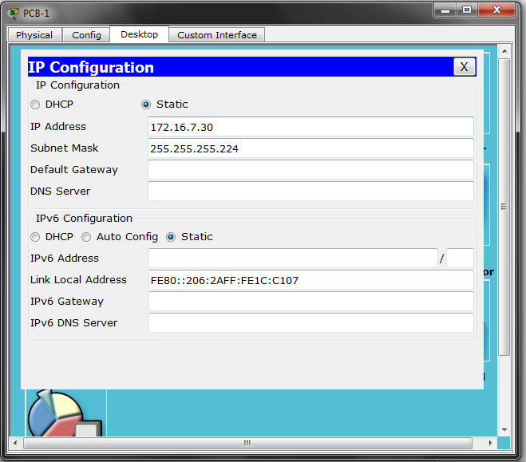

«Интернет технологии»
Целыковский Алексей
студент ИДМ-19-02
Лабораторная работа №1
1) Изучена работа с сервисом Github как с хостингом;
2) Создан и оформлен репозиторий для личной страницы;
{kind=link}
{kind=link}
3) Разработана личная страница – отчет для лабораторных работ;
{kind=link}
4) На личную страницу добавлена «программная» часть – часы в блоке Header;
{kind=link}
5) Страница выгружена в репозиторий на Github.
Лабораторная работа №2
1) Сформированна команда «RUINЪ» из 3 человек для работы над проектом.
В состав команды входят:
2) Разработан сайт-проект «CoTe» Formatting. Сайт предназначен для форматирования кода и приведения его в читаемый вид. Ссылка на сайт: «CoTe» Formatting
3) Разработан сайт-презентация проекта «CoTe» Formatting - сайт команды «RUINЪ». Сайт предназначен для презентации проекта «CoTe», а также является «визиткой» команды «RUINЪ». Ссылка на сайт: «RUINЪ»
Лабораторная работа №3
Вариант 7
Лаюораторная работа по созданию и настройке сети в программной среде Cisco Packet Tracer
К печали перфекционистов изображения порезаны криво :с
Некоторые изображения содержат подписи, доступные при увеличении изображения (такие как вывод о работоспособности сети)
Все изображения объедененны в группу одной лабораторной
Если нужно ознакомится только со скринами, то при увеличении любого изображения,
в верхнем правом углу есть кнопочка для просмотра всех изображений из группы
0) Рассчитать IP адреса сети;
При нажатии изображение будет увеличено
1) Разместить на рабочем поле коммутатор и два компьютера и соединить их;
{kind=link}
2) Настроить адресацию на добавленных компьютерах согласно таблице ниже без шлюза по умолчанию;
{kind=link}
{kind=link}
3) Выполнить проверку работоспособности сети;

4) Добавить на рабочее поле еще один коммутатор с двумя компьютерами и настроить адресацию из другой подсети;


{kind=link}

5) Соединить коммутаторы между собой и проверить работоспособность сети;
{kind=link}
6) Добавить маршрутизатор на рабочее поле;
{kind=link}
7) Настроить интерфейсы маршрутизатора для существующих подсетей и проверить работоспособность сети;

{kind=link}
8) Указать шлюз по умолчанию и отправить сообщение;
{kind=link}
{kind=link}

9) Добавить на рабочее поле еще один маршрутизатор;

10) Подключить к нему коммутатор и компьютер;

11) Настроить сетевые настройки согласно таблице ниже;


12) Соединить между маршрутизаторы и настроить между ними сеть с префиксом /30;


{kind=link}
13) Проверить работоспособность сети, отправив сообщение сети A в сеть С и из сети В в сеть С;

14) Настроить статическую маршрутизацию между сетями;
{kind=link}

15) Настроить на сетевых устройствах пароли для привилегированного режима;
{kind=link}

16) Настроить пароли на сетевых устройствах пароли на подключение через консоль и telnet;

{kind=link}
17) Установить баннер на сетевое оборудование;

18) Проверить работу удаленного подключения + Проверка работоспособности всей сети.
{kind=link}
{kind=link}
{kind=link}
Рабочий файл для Cisco Packet Tracer:«Скачать»
Подготовка к экзамену
Билет 4
1) Понятия информации, информационных технологий, информационных систем. Обязанности оператора информационной системы.
Существует много различных определений термина «информация». В Федеральном закон Российской Федерации от 27 июля 2006 г. N 149-ФЗ «Об информации, информационных технологиях и о защите информации» приведено точное определение данного термина, которого следует придерживаться:
- Информация - сведения (сообщения, данные) независимо от формы их представления.
Так же там приведены следующие важные определения:
- Информационные технологии(ИТ) - процессы, методы поиска, сбора, хранения, обработки, предоставления, распространения информации и способы осуществления таких процессов и методов;
- Информационная система(ИС) - совокупность содержащейся в базах данных информации и обеспечивающих ее обработку информационных технологий и технических средств.


Классифицировать информационные системы достаточно сложно из-за их разнообразия и постоянного развития структур и функций.
В качестве признаков классификации используются такие как:
- область применения;
- охватываемая территория;
- организация информационных процессов;
- направление деятельности;
- структура и др.
Основными признаками следует считать разделение информационных систем по территориальному признаку и по сфере применения.
По территориальному признаку автоматизированная информационная система (АИС) классифицируются на геоинформационные, международные, общегосударственные, областные, республиканские, окружные, городские, районные и т.д.
По сфере применения различают АИС в экономике, в промышленности, в торговле, на транспорте, в правовой сфере, в медицине, в учебных заведениях и т.п.
Информационные технологии следует классифицировать прежде всего по области применения. Различают такие области применения информационных технологий, как наука, образование, культура, экономика, производство, военное дело и т. п.
Все в том же ФЗ «Об информации, информационных технологиях и о защите информации» (с.2.) дается следующее определение:
- Оператор информационной системы – гражданин или юридическое лицо, осуществляющие деятельность по эксплуатации информационной системы, в том числе по обработке информации, содержащейся в ее базах данных.
Также там приведены (с.12.1.) следующие обязанности оператора информационной системы:
- Если иное не установлено федеральными законами, оператором информационной системы является собственник используемых для обработки содержащейся в базах данных информации технических средств, который правомерно пользуется такими базами данных, или лицо, с которым этот собственник заключил договор об эксплуатации информационной системы. В случаях и в порядке, установленных федеральными законами, оператор информационной системы должен обеспечить возможность размещения информации в сети «Интернет» в форме открытых данных.
2) Язык разметки HTML. Блочные и строчные элементы. Создание и управление стилями.
HTML (от англ. HyperText Markup Language — «язык гипертекстовой разметки») – стандартизированный язык разметки документов во Всемирной паутине, а также вся система верстки, которая определяет, как и какие элементы должны располагаться на веб-странице. Язык HTML интерпретируется браузерами; полученный в результате интерпретации форматированный текст отображается на экране монитора компьютера или мобильного устройства.
HTML-документ – это обычный текстовый документ, имеющий расширение .html. HTML-документ состоит из дерева HTML-элементов и текста. Каждый элемент обозначается в исходном документе начальным (открывающим) и конечным (закрывающим) тегом (за редким исключением).
Выделяют две основные категории HTML-элементов, которые соответствуют типам их содержимого и поведению в структуре веб-страницы – блочные и строчные элементы. С помощью блочных элементов можно создавать структуру веб-страницы, строчные элементы используются для форматирования текстовых фрагментов (за исключением элементов и ).
Шаблон html-страницы:
Разделение элементов на блочные и строчные используется в спецификации HTML до версии 4.01. В HTML5 эти понятия заменены более сложным набором категорий контента, согласно которым каждый HTML-элемент должен следовать правилам, определяющим, какой контент для него допустим.
Блочные элементы (block)
В блочной модели элемент рассматривается как прямоугольный контейнер, имеющий область содержимого, необязательные рамки и отступы внутренние и внешние).

Блочные элементы – элементы высшего уровня, которые форматируются визуально как блоки, располагаясь на странице в окне браузера вертикально. Блочные элементы:
Строчные элементы (inline)
Встроенные (строчные) элементы генерируют внутристрочные контейнеры. Они не формируют новые блоки контента. Строчные элементы являются потомками блочных элементов. Ширина и высота строчного элемента зависит только от его содержимого.
Строчные элементы:
В создании стилей можно выделить 3 основных подхода:
- встроенный;
- внутренний;
- внешний.
Наиболее распространенным подходом является внешний, который заключается в создании отдельного CSS файла для сохранения стилей и последующем подключении этого файла к основному Html-документу.
Если говорить конкретно о создании стилей в Html-документе, то рассматриваются два подхода: встроенный и внутренний.
Встроенный CSS
Встроенный CSS используется для применения уникального стиля к одному элементу HTML.
Встроенный CSS использует атрибут style элемента HTML.
Внутренняя CSS
Внутренний CSS используется для определения стиля для одной HTML-страницы.
Внутренняя таблица CSS определена в разделе <head> HTML-страницы в элементе <style>.